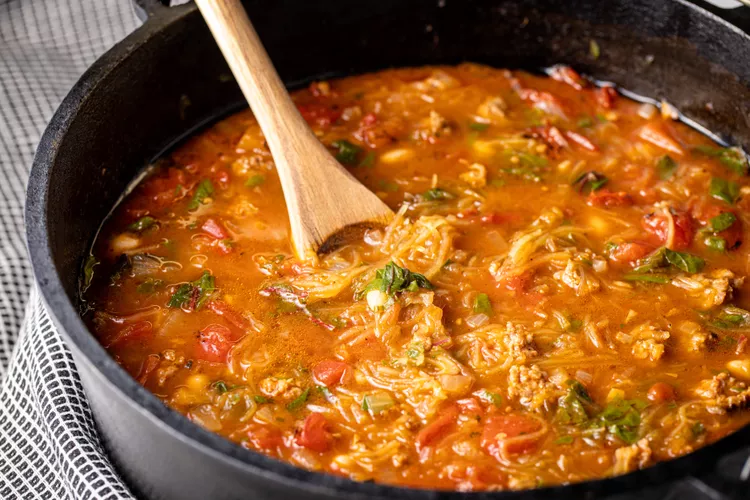

Spaghetti

Desciption
Spaghetti squash is a member of the gourd family, which means the outer shell is very tough. However, there are a few tricks to make cutting and cooking spaghetti squash easier
Ingredients
- Grated cheddar, shaved Parmesan, or pecorino cheese play well here
- Crispy baked tortilla strips give it a little crunch
- 1 medium (about 3 pounds) spaghetti squash, halved lengthwise and seeded
- 2 tablespoons extra-virgin olive oil, divided
- 12 ounces spicy Italian sausage, casings removed
- 2 cups Swiss chard, roughly chopped
Step
- Preheat the oven to 400°F.
- Prep the squash
- Roast, then scrape squash into “spaghetti"
- Brown the sausage
- Sauté the onion and garlic
- Add the tomatoes and stock
Back To Top
Back To Home